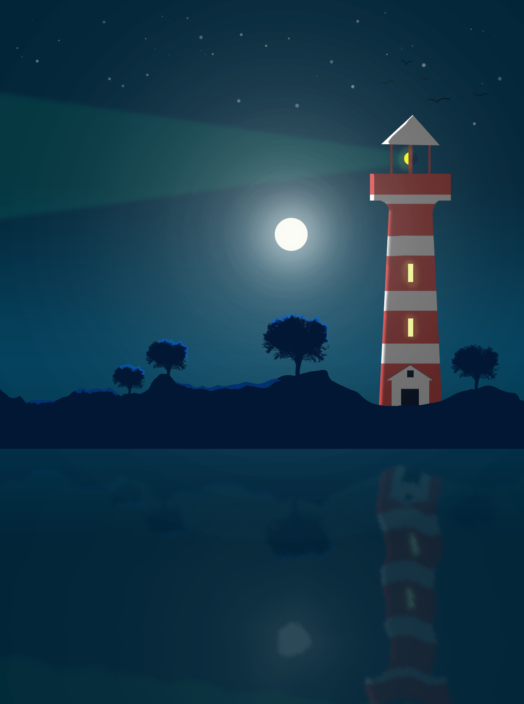
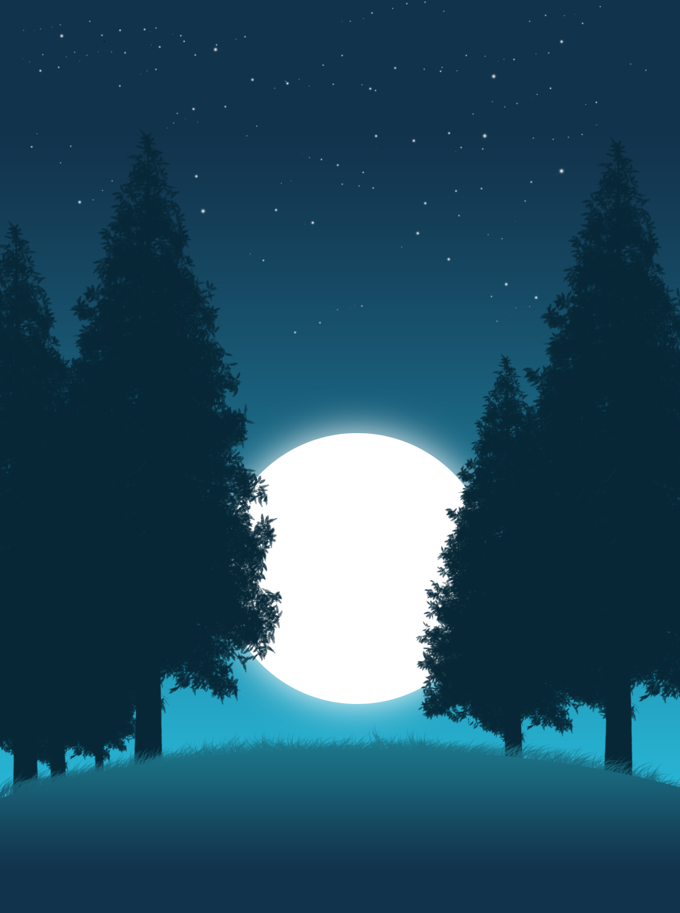
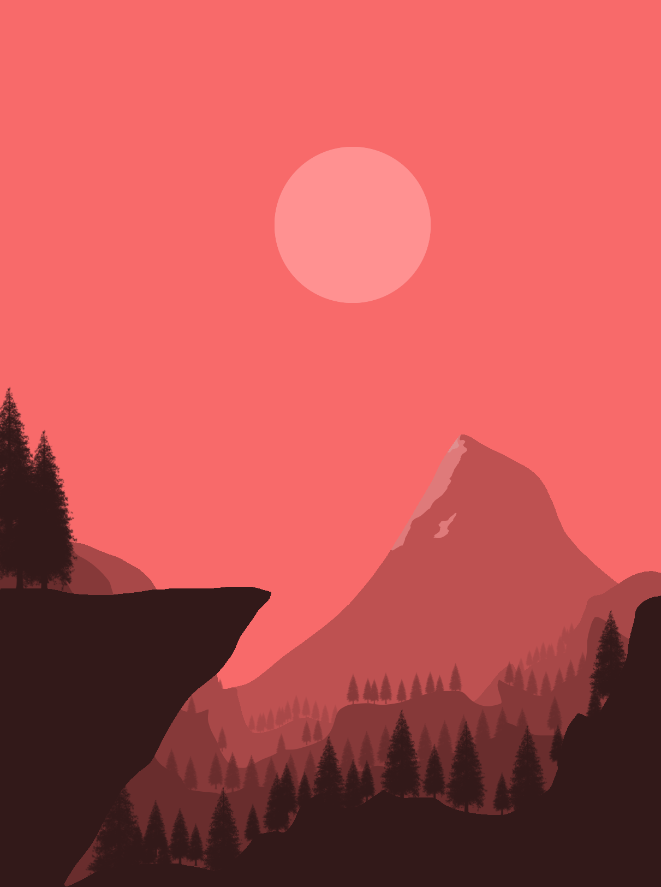
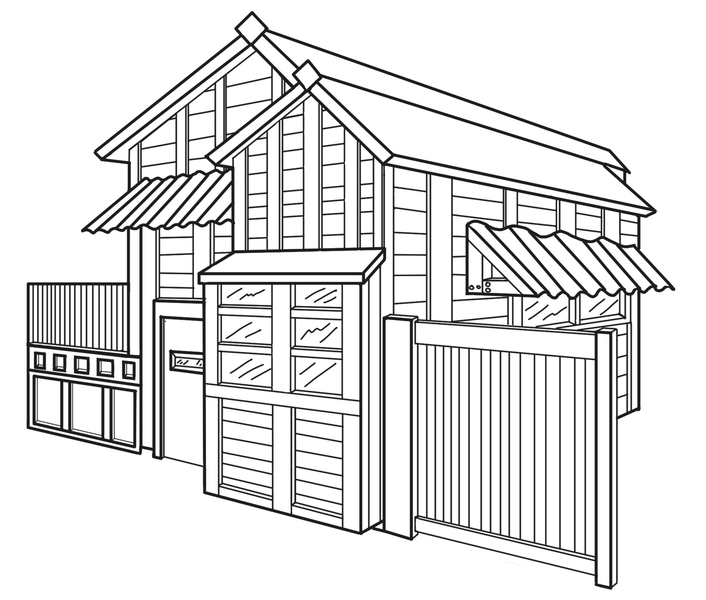
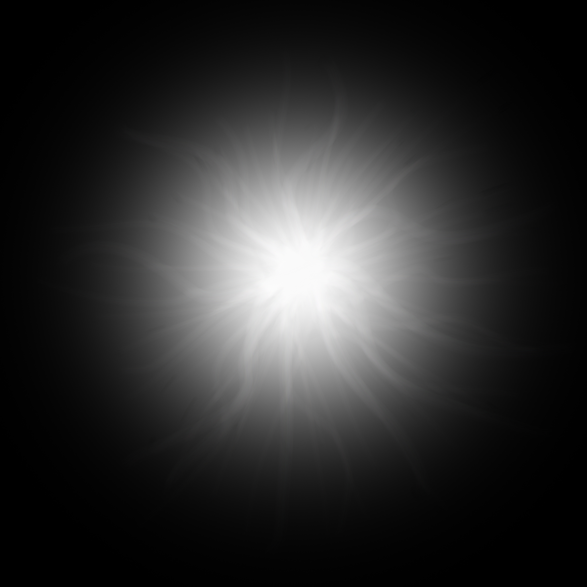
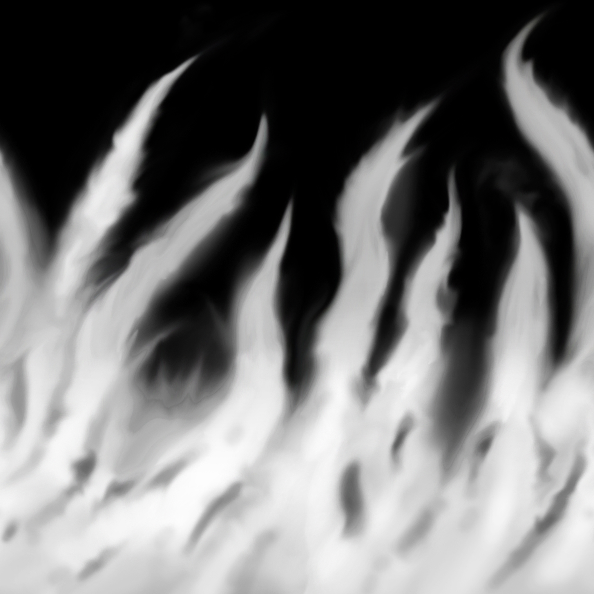
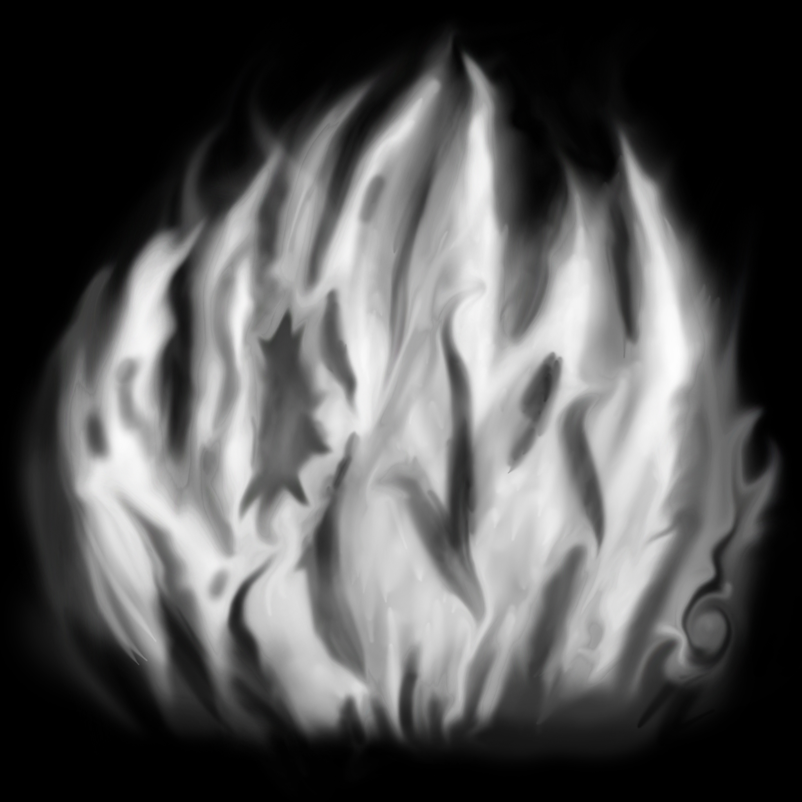

Photoshop Art
This is where examples of my artwork with photoshop are shown, these have been made using reference art pieces.
2D Art
I wanted to expand on my skills with photoshop for games so I decided to research 2D background art and single pane images that could be used for title screens. After following some tutorials and finding some images I wanted to see if I could recreate some of the artwork I'd seen during my research. These are the results.




VFX Textures
These textures were created for a fire VFX explosion in UE4, the black has been added to make the texture more visible, normally they would be transparent.


